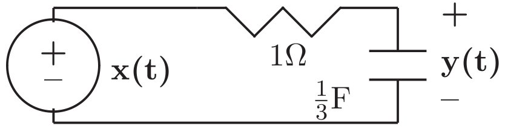
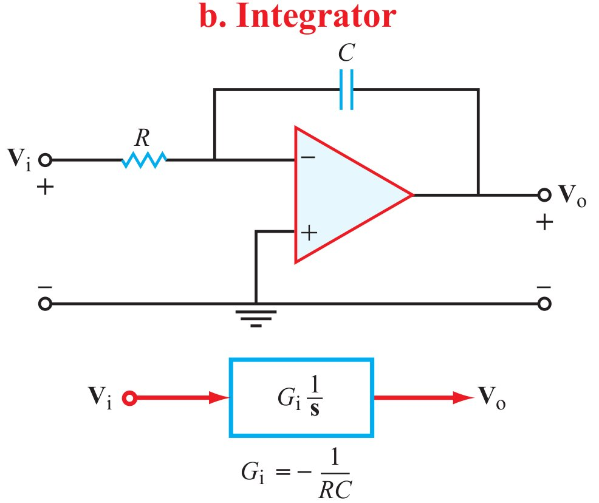
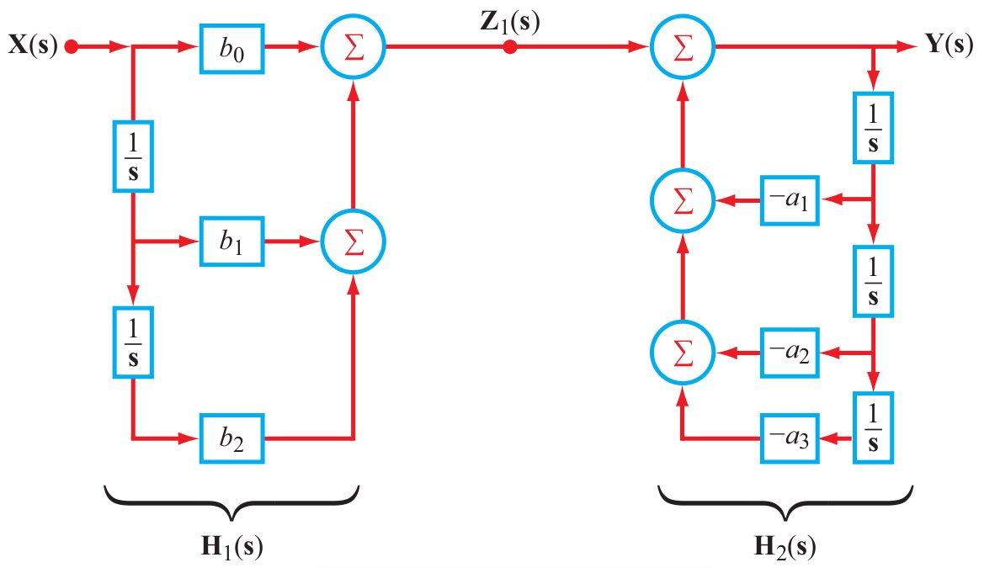
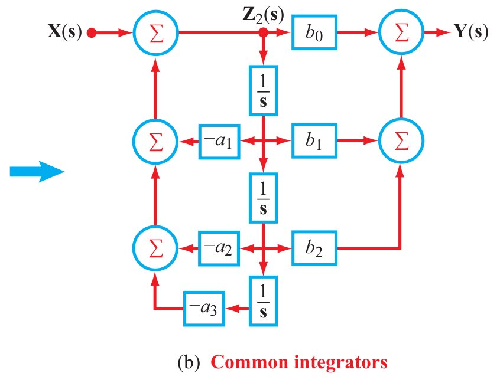

The input to an RC circuit with RC $=1$ s and the capacitor
initially charged to 1 V is $u(t)$. Use ${\bf s}$-domain circuit analysis to
compute the capacitor voltage.
Solution:
The ${\bf s}$-domain circuit equivalent
of the capacitor is impedance $\frac1{{\bf s} C}$ in series with voltage
source
$\displaystyle
\frac{v(0^-)}{\bf s}=\frac1{\bf s}.
$
The step input becomes voltage source
${\cal L}\{u(t)\}=\frac1{\bf s}$.
Let ${\cal L}\{i(t)\}={\bf I} ({\bf s})$. Applying KVL gives
$\displaystyle
\frac1{\bf s}-{\bf I} ({\bf s})\;R-{\bf I} ({\bf s})\;\frac1{{\bf s} C}-\frac1{\bf s}=0,
$
which leads to ${\bf I} ({\bf s})=0$.
The capacitor voltage is then
$\displaystyle
{\bf I} ({\bf s})\;\frac1{{\bf s} C}+\frac1{\bf s}=\frac1{\bf s},
$
whose inverse Laplace transform is $u(t)$.
Test 4.2
In the circuit shown below, $x(t)=e^{-3t}\cos(3t)\;u(t)$ and
$y(0)=0$.

Use ${\bf s}$-domain circuits to compute $y(t)$:
Solution:
By voltage division,
$\displaystyle
{\bf Y}({\bf s})=\frac{1/({\bf s}/3)}{1+1/({\bf s}/3)}\;
{\bf X}({\bf s})=\frac3{{\bf s}+3}\;
{\bf X}({\bf s})
$
$\displaystyle
=\frac3{{\bf s}+3}\frac{{\bf s}+3}{({\bf s}+3)^2+3^2} =\frac3{({\bf s}+3)^2+3^2},
$ using entry #14 of Table 3-2.
Then $y(t)={\cal L}^{-1}\{\bf Y ({\bf s})\}=e^{-3t}\sin(3t)\;u(t)$ using
entry #13 of Table 3-2, which are:
A mass $m$ is attached to a spring with spring constant $k$. The
other end of the spring is connected to a surface that suddenly
moves 1 m (its velocity is then $\displaystyle \frac{du}{dt}=\delta(t)$). Use
electromechanical analogues and ${\bf s}$-domain circuits to compute the
mass velocity.
Solution:
Electromechanical analogues:
spring$\to$inductor with inductance $\frac1{k}$;
mass$\to$capacitor with capacitance $m$.
${\bf s}$-domain circuits:
inductor$\to$impedance $\frac{\bf s}{k}$;
capacitor$\to$impedance $\frac1{{\bf s} m}$; $\to{\cal L}\{\delta(t)\}=1$.
Capacitor voltage
$\displaystyle
{\cal L}\{v_{\rm c} (t)\}={\bf V}({\bf s})=1\frac{1/({\bf s}
m)}{1/({\bf s} m)+{\bf s}/k}=\frac{k/m}{{\bf s}^2+k/m}.
$
Then
$\displaystyle
v_{\rm c}(t)=\sqrt{k/m}\sin(\sqrt{k/m}\,\,t)\;u(t)
$
is the mass velocity using entry #9 in Table 3-2, which is
An op-amp circuit has a capacitor in its feedback loop and a
resistor in its input. The circuit can best be described as:
Solution: See Table 4-3, which
shows

Test 4.5
An op-amp circuit has a capacitor $C$ in its feedback loop and a
resistor $R$ in its input. The transfer function of the op-amp
circuit is:
Solution:
Noting units immediately eliminates (a) and (b). See Table 4-3, which
shows
Test 4.6
The advantage of Direct Form II system realization over Direct
Form I is:
Solution:
Compare Fig. 4-20 with 4-21(b) (both shown below):


Test 4.7
The reason for using integrators instead of differentiators in
system realizations:
Solution:
This is the only true advantage of
integrators.
Test 4.8
Why do we use feedback in systems?
Solution:
All of these are presented in
Sections 4-8 to 4-10.
Test 4.9
Stabilization of the unstable system with impulse response
$h(t)=be^{at}\;u(t)$ where $a,b>0$ requires feedback gain $K>$ ?
Solution:
${\bf H} ({\bf s})=\frac{b}{{\bf s}-a}$. Hence
Eq. (4.101) is
$\displaystyle
{\bf Q}({\bf s})=\frac{{\bf H} ({\bf s})}{1+K{\bf H}
({\bf s})}=\frac{b/({\bf s}-a)}{1+Kb/({\bf s}-a)}=\frac{b}{({\bf s}-a)+Kb},
$ whose pole is $a-Kb$, which is in the left half-plane if
$a-Kb<0$. See Section 4-8.3.
Test 4.10
Stabilization of the unstable system with transfer function
$\displaystyle
{\bf H}({\bf s})=\frac{{\bf s}+3}{{\bf s}^2+4}
$ requires feedback gain $K>$ ?:
Solution:
$\displaystyle
{\bf Q}({\bf s}) = \frac{{\bf H} ({\bf s})}{1+K\bf H({\bf s})}
$
$\displaystyle
= \frac{({\bf s}+3)/({\bf s}^2+4)}{1+K({\bf s}+3)/({\bf s}^2+4)}
$
$\displaystyle
=\frac{{\bf s}+3}{{\bf s}^2+4+K{\bf s}+3K}
$
$\displaystyle
=\frac{{\bf s}+3}{{\bf s}^2+K{\bf s}+(3K+4)}.
$
The roots of the denominator ${\bf s}^2+K{\bf s}+(3K+4)$ lie in the left
half-plane if and only if $K>0$ and $(3K+4)>0$, which combine to just
$K>0$. See Section 4-8.3.
Test 4.11
A system is described by the LCCDE $\displaystyle \frac{dy}{dt}+ay=bx$, where
$a,b>0$. To speed up the impulse response by a factor of 2 we can
use feedback with feedback gain $K=$ ?
Solution:
Taking the Laplace transform of
the LCCDE gives ${\bf Y} ({\bf s})\;({\bf s}+a)=b\;{\bf X} ({\bf s})$. The transfer
function is
$\displaystyle
{\bf H} ({\bf s})=\frac{{\bf Y} ({\bf s})}{{\bf X} ({\bf s})}=\frac{b}{{\bf s}+a}
$
and the impulse
response is $h(t)=be^{-at}\;u(t)$.
$\displaystyle
{\bf Q}({\bf s})=\frac{{\bf H} ({\bf s})}{1+K{\bf H} ({\bf s})}
=\frac{b/({\bf s}+a)}{1+Kb/({\bf s}+a)}=\frac{b}{({\bf s}+a)+Kb}.
$
$Kb=a$ speeds up $h(t)$ by a factor of 2.
Test 4.12
The steady-state step response $\displaystyle \lim_{t\to\infty}y_{\rm
step}(t)$ of stable
$\displaystyle
{\bf H} ({\bf s})=\frac{{\bf s}^2+a{\bf s}+b}{{\bf s}^2+c{\bf s}+d}
$ is:
Solution:
Using the final-value theorem
Eq. (3.32),
$\displaystyle
\lim_{t\to\infty}y_{\rm step}(t)
= \lim_{{\bf s}\to 0}{\bf s}\;{\bf Y} _{\rm step}({\bf s}),
$
$\displaystyle
{\bf Y} _{\rm step}({\bf s}) = {\bf H} ({\bf s})\;{\bf U}({\bf s})
=\frac{{\bf s}^2+a{\bf s}+b}{{\bf s}^2+c{\bf s}+d} \frac1{\bf s}.
$
Cancelling $\frac{\bf s}{\bf s}$ leads to
$\displaystyle
\lim_{t\to\infty}y_{\rm step}(t)
={\bf H} (0)= \left.\frac{{\bf s}^2+a{\bf s}+b}{{\bf s}^2+c{\bf s}+d}\right|_{{\bf s}=0}=\frac{b}{d}.
$
See Example 3-4. This is a very useful result in control theory.
Test 4.13
An unstable system has $h(t)=\cos(6t)\;u(t)$. The feedback gain
that makes the closed loop poles $\{-4,-9\}$ is:
An unstable system has $h(t)=\cos(6t)\;u(t)$. Using PI feedback
$\displaystyle
G(s)=K_1+\frac{K_2}{\bf s}\;,
$ the closed-loop system poles are $\{-8,-9\}$ for what values of
$(K_1,K_2)$?
Solution:
$\displaystyle
{\bf H} ({\bf s})={\cal L}\{\cos(6t)\;u(t)\}=\frac{\bf s}{{\bf s}^2+36}.
$
Eq. (4.101) is
$\displaystyle
{\bf Q}({\bf s}) = \frac{{\bf H}({\bf s})}{1+{\bf G}({\bf s}){\bf H}({\bf s})}
$
$\displaystyle
=\frac{{\bf s}/({\bf s}^2+36)}
{1+(K_1+K_2/{\bf s}){\bf s}/({\bf s}^2+36)}
$
$\displaystyle
= \frac{\bf s}{({\bf s}^2+36)+(K_1+K_2/{\bf s}){\bf s}}
$
$\displaystyle
=\frac{\bf s}{{\bf s}^2+K_1{\bf s}+(36+K_2)}.
$
For ${\bf Q}({\bf s})$ with poles at ${\bf s}=8$ and ${\bf s}=9$,
$\displaystyle
\frac{\bf s}{({\bf s}+8)({\bf s}+9)}=\frac{\bf s}{{\bf s}^2+17{\bf s}+72},
$
which leads to $K_1=17$ and $K_2=36$.
Test 4.16
An (unstable) pure integrator has $\displaystyle {\bf H} ({\bf s})=\frac1{\bf s}$. The
feedback gain $K$ that makes the closed-loop impulse response
$q(t)=e^{-2t}\;u(t)$ is
has poles $\pm j\sqrt{36+6K}$ if $36+6K>0$ and $\pm\sqrt{-36-6K}$
if $36+6K<0$. Either way, the closed-loop system is unstable.
Test 4.18
An unstable system has $h(t)=\sin(6t)\;u(t)$. Using PD feedback
${\bf G} ({\bf s})=K_2{\bf s}$ the closed-loop system has a double pole at $-6$
for what value of $K_2$?
An (unstable) pure integrator has $\displaystyle {\bf H} ({\bf s})=\frac1{\bf s}$. The
closed-loop system is stable for what values of feedback gain $K$?
Solution:
Eq.(4.101) is
$\displaystyle
{\bf Q}({\bf s})=\frac{{\bf H}({\bf s})}{1+K{\bf H} ({\bf s})} =
\frac{1/{\bf s}}{1+K/{\bf s}}=\frac1{{\bf s}+K}.
$
The pole is in the left half-plane for $K>0$.